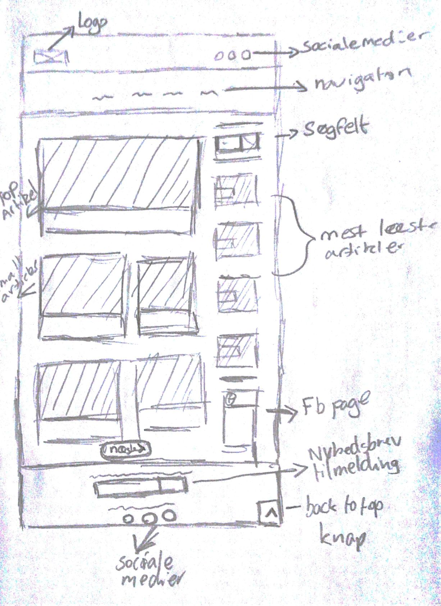

Projektpræsentation
Til dette projekt skulle vi se os selv som Content creator. Opgaven bestod i at skabe et online magasin, som består af minimum 3 artikler til målgruppen, som er mine medstuderende på Erhvervsakademiet i Aarhus.
Der skulle være overvejelser omkring målgruppen ift. hvem er de? Hvad vil målgruppen læse om i et online magasin? Hvilke interesser har målgruppen?
Mit overordnet tema til mit online magasin var – Grafisk design.
Arbejdsproces
For at finde ud af hvad mine medstuderende gerne ville have på mit online magasin, formulerede jeg en produktvision for at bedre kunne udarbejde mine artikler:
- • Step by step guide
- • Templates
- • Tips & tricks
- • Del artiklerne ift. kategorier
- • Nybegynder guide
Derefter udarbejdede jeg brugerprofiler, der repræsenterede forskellige segmenter – her er et eksempel:
(Nybegynder)
20-årige HHX-studerende Mads Nielsen besøger tit og læser nyhedsartikler inden for iværksætteri. Han er begyndt at for en interesse inden for grafisk design. For Mads er det vigtigt at kunne finde indhold, som er let tilgængeligt og nemt at anvende.
Jeg udarbejder dernæst 3 user-stories til mit online magasin – her er et eksempel:
Som nybegynder vil jeg gerne se en basisk guide til Photoshop, så jeg kan få en god start til programmet.
Designdel
Moodboard
Før jeg overhovedet begyndte på at skitsere på logo og lavede jeg et moodboard for at få en stemning og en fornemmelse for, hvilken retning mit online magasin skulle hen:

Typografi & farver
Jeg valgte Montserrat som min skrifttype til overskrifterne, og jeg valgte den pga. dens rene, struktureret og læsbart form. Og da den er en sans-serif, giver den også et moderne udtryk, hvilket passer godt med mit online magasin.
For at skabe en dejlig kontrast til Montserrat, så har jeg valgt at bruge en serif font til mine brødtekster – Lora.
Lys, stærk blå som min primære farve, den gule som sekundær og den sorte for at balancere de to farver.
Logo process
Jeg havde nogle formål med mit online magasin. Den skulle guide, rådgive og inspirere målgrupperne, og jeg kom frem til nogle spændende navne mit magasin, som er Graphico News, GraphSelect og ArtSelect, hvor sidstnævnte blev vinderen.
Det endelige logo blev valgt pga. den abstrakte form, den havde, hvilket passede godt til mit online magasin navn.
Wireframes
I denne proces, lavede jeg en del forskellige wireframes til magasinet. Jeg tog de forskellige ideer/versioner og udvalgte de bedste af dem, som skulle videre i processen:
Magasinet - slut produktet

Jeg brugte Bootstrap for at gøre arbejdsprocessen hurtigere og gøre siden responsivt, så jeg kunne fokusere på indholdet. Jeg benyttede mig også af Sass, hvor jeg kunne benytte mig af variabler for at holde bedre styr på min CSS.
Reflektion
Jeg har fået noget faglig udvikling, når det kommer til kommunikationsfaget og det med at skrive til web. Jeg har fået en bedre forståelse for, hvordan du bedre kan målrette dine indlæg til forskellige segmenter. jeg har dog følt, at jeg har en del mangler i denne cast ift. mine brugerprofiler og userstories, som er opdigtet, da jeg havde fuldstændig glemt, at jeg skulle bruge mine medstuderende – kun min produktvision var lavet ude fra dem.
I designfaget blev jeg gjort mere opmærksom på komposition, når det kommer til designelementer, dog fik jeg ikke lavet et mockup, hvor jeg lavede hjemmesiden ude fra mine wireframes, fordi jeg troede i mit hoved, at det behøvede man ikke; og jeg kunne have gjort mit moodboard en del bedre.
Det der gjorde mest indtryk for mig ved interaktionsfaget var flexbox. Jeg havde hørt om det, men har aldrig givet det en chance, men nu kan jeg se det smarte ved flexbox.
Jeg følte hellere ikke, at strukturen i min Trello var særlig god, hvilket gjorde, at jeg ikke havde så godt overblik over projektet. Det ville have været bedre, hvis jeg fik sparret med en fra klassen i stedet for at arbejde der hjemme, hvilket gjorde at jeg låste mig selv fast og ikke kunne få input til opgaven.
ArtSelect website